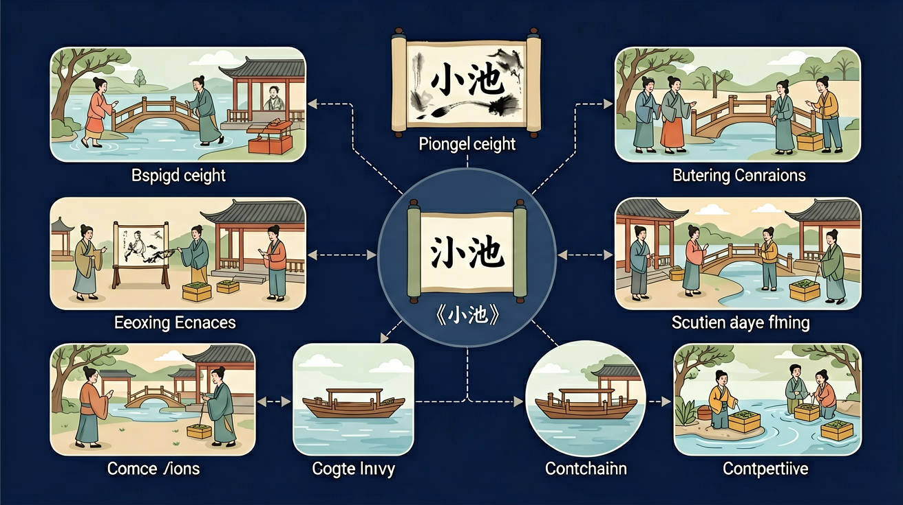
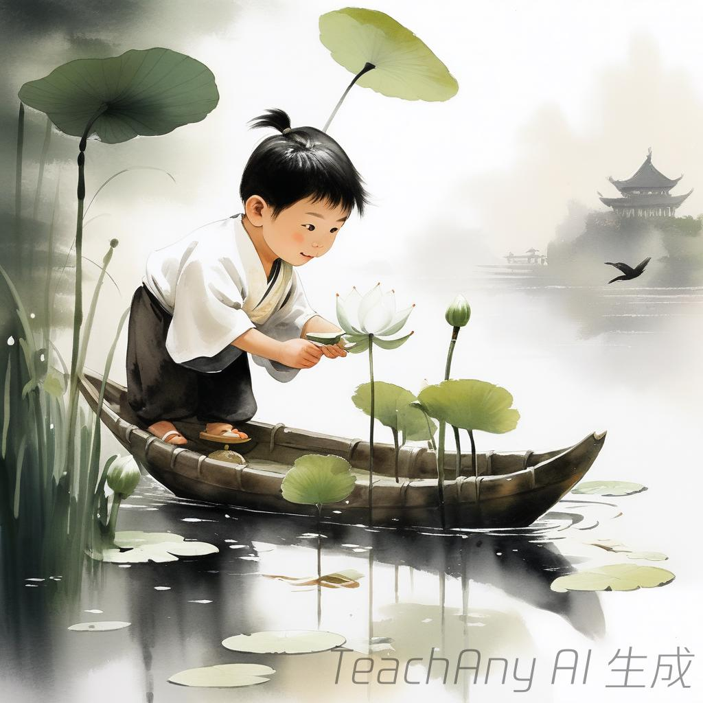
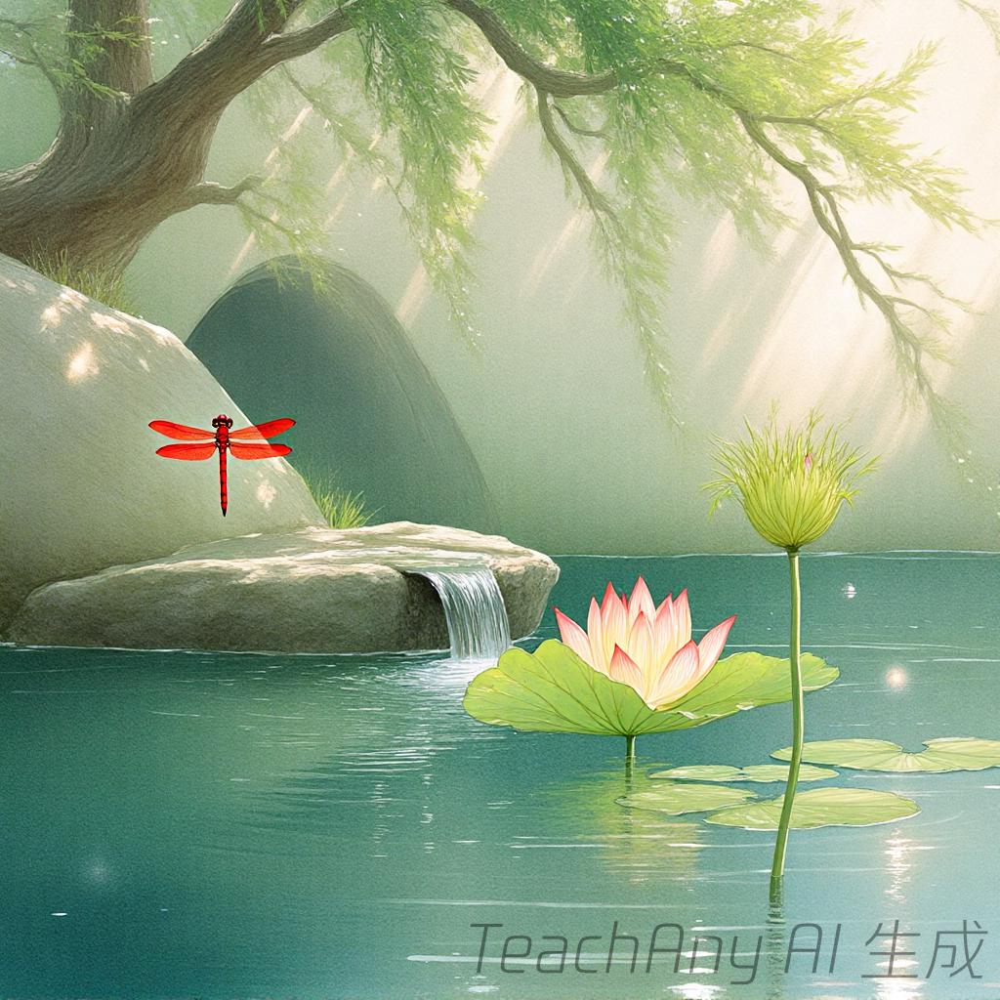
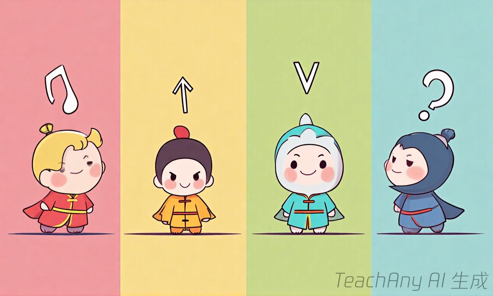

🎯 本节课学习目标
🎯
- ✅ 复习四声：一声平、二声扬、三声拐弯、四声降
- ✅ 认识平仄：一二声=平声，三四声=仄声
- ✅ 发现规律：五言看第2、4字，七言看第2、4、6字
💡 完成本节课后，你就能发现古诗里的秘密节奏啦！

❓ 为什么古诗读起来像唱歌一样好听呢？
❓ 平仄到底是什么？和四声有什么关系？
❓ 我写的小诗怎么才能有古诗的节奏感？
学完这一课，这些问题你都能自信地回答。
'泉眼无声'中哪个字是仄声？
古诗平仄主要影响什么？



And：学生已掌握四声调
But：不知道声调变化能组成韵律
Therefore：理解平仄是古诗朗读的钥匙
平仄就像声音的跷跷板（配跷跷板图）。第一声“ā”和第二声“á”是平，像跷跷板放平；第三声“ǎ”和第四声“à”是仄，像突然压下去。比如“白毛浮绿水”中，“白(diào)”是仄声，“毛(máo)”是平声，一高一低像跳舞。注意数字：古诗每句通常有5或7个这样的平仄组合。
🌍 就像我们跳绳喊的“一二三四，二二三四”（配跳绳小视频），平声是数数时的“二”，仄声是用力跳时的“四”。
“红掌拨清波”哪两个字是仄声？
把诗句拆成单字，标出每个字的平仄（平声为横线，仄声为竖线）
平声是悠长的声音（如第一、二声），仄声是短促的声音（如第三、四声）
对比两首诗：五言诗《池上》每句2-3个平声，七言诗《小池》每句3-4个平声
用彩色磁贴演示：黄色平声字排成波浪线，红色仄声字排成小山峰
给儿歌《小星星》标平仄，发现'一闪一闪'都是仄声所以节奏轻快
关于古诗节奏的正确说法是
对比《小池》与《池上》的节奏特点
先独立作答，再点选项查看对错与错因。
《小池》中'树阴照水爱晴柔'的正确节奏划分是
与'小娃撑小艇'节奏相同的是
两首诗都运用了哪种描写手法？
《池上》中'不解藏踪迹'的'解'字读音是____
答案：jiě
此处是'懂得'的意思
《小池》最后一句'早有蜻蜓____'
答案：立上头
注意'立'字的正确书写
✅ 轻声属于仄声，用短竖线标记
💡 混淆了声调与音长概念
✅ 示范'小娃撑小艇'第二字'娃'是平声
💡 过度概括五言诗'仄仄平平仄'格式
口诀：一二声平三四仄，平长仄短像唱歌
类比：平仄像钢琴的黑白键，平声是白键（长音），仄声是黑键（短音）
《小池》'树阴照水爱晴柔'的平仄规律是？
改写'春风花草香'为七言诗，平仄正确的是？
为'放学真开心'标平仄，正确的是？